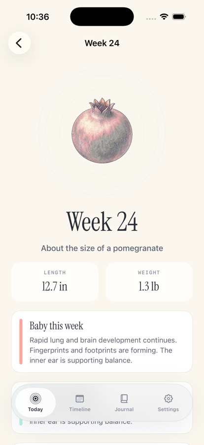
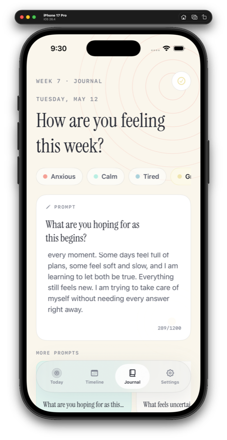
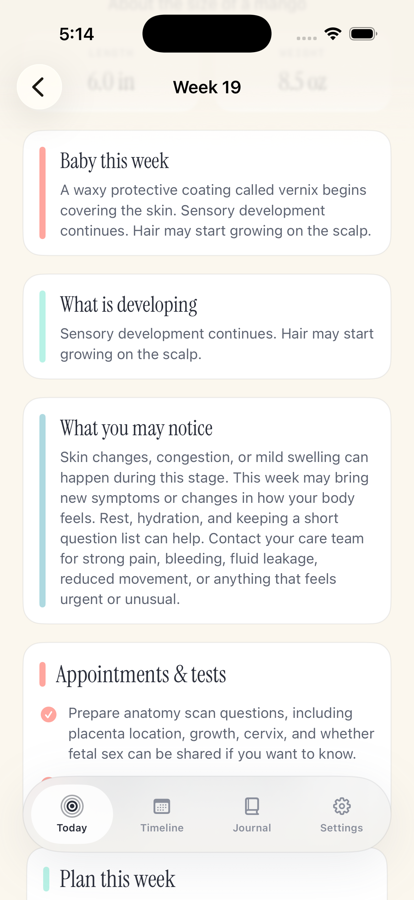
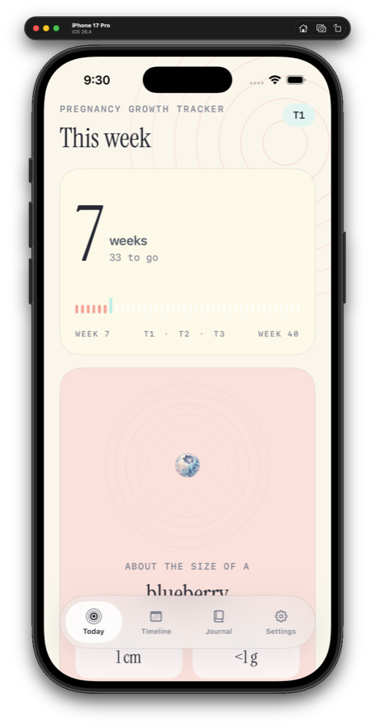
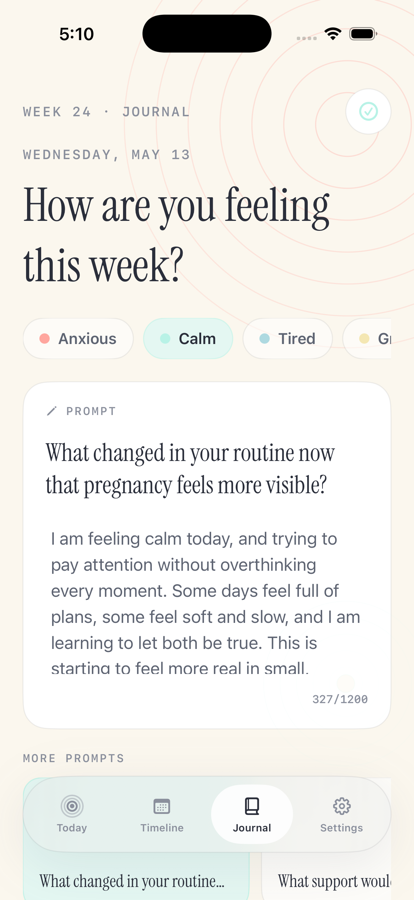

Week-by-week growth
See the current week, trimester, weeks remaining, approximate fetal length and weight, and a gentle size comparison.
Pregnancy Growth Tracker is a calm week-by-week companion for following fetal growth, preparing for upcoming milestones, and keeping private notes along the way.

Built for expecting parents who want a clear view of the current week without turning pregnancy into a noisy dashboard.
See the current week, trimester, weeks remaining, approximate fetal length and weight, and a gentle size comparison.
Browse every week, preview upcoming development, and keep future comparison visuals softly hidden until the time comes.
Choose a mood, answer pregnancy-stage-aware prompts, and build a local timeline of notes from early pregnancy through week 40.
Each week can include practical appointment, preparation, and local-help prompts written with flexible care-team language.
No account, backend sync, analytics, tracking, or cloud journal storage. Pregnancy data stays on the device.
The app provides general pregnancy information only. It is not medical advice, not a medical device, and not a substitute for a care team.
Today, timeline, week detail, journal, and settings screens stay focused on growth, planning, and private reflection.







A pregnancy tracker app helps you follow pregnancy week by week with estimated baby growth, trimester progress, body changes, planning notes, and personal reminders.
No. Pregnancy Growth Tracker provides general educational information only. It is not medical advice, not a medical device, and not a substitute for a clinician, midwife, or care team.
Each week includes approximate baby size, growth notes, body changes, planning reminders, and prompts for things to consider or ask your care team.
Pregnancy week is usually estimated from your last menstrual period, due date, or dating ultrasound. Your care team can confirm your official pregnancy timing.
Pregnancy is commonly tracked as about 40 weeks, counted from the first day of the last menstrual period.
Pregnancy Growth Tracker shows approximate fetal length, weight, and size comparisons to help make week-by-week growth easier to picture.
Week-by-week pregnancy pages cover general baby development, common body changes, and practical things to consider as pregnancy progresses.
Many people track pregnancy week, appointments, symptoms, questions for their clinician, baby movement later in pregnancy, and personal journal notes.
Yes. You can use the journal to save private notes, symptoms, questions, appointment reminders, reflections, or birth-planning ideas.
Journal entries save locally on the device. The app does not require an account, backend sync, analytics, or tracking.
Yes. Pregnancy Growth Tracker is designed for local use and does not require an account or login.
No. Big Pants Apps does not collect, sell, share, or store personal data from Pregnancy Growth Tracker. Your pregnancy timeline and journal information stay on your device.
Yes. Weekly pages can include prompts for things to ask your care team, appointments to plan, and preparations to consider.
Appointment timing varies, but many pregnancies include early confirmation, routine prenatal visits, screening tests, an anatomy ultrasound, glucose screening, and later third-trimester checkups.
The app may mention childbirth education, breastfeeding classes, newborn care, infant first aid or CPR, hospital tours, birth planning, and postpartum planning.
It may provide planning prompts or links that help you search for nearby providers, classes, or resources. Big Pants Apps does not receive those searches.
Contact your care team for concerning symptoms, urgent questions, changes in fetal movement, bleeding, severe pain, severe headache, or anything that feels unusual.
Pregnancy tracker apps provide estimates and general educational information. Your clinician, ultrasound dating, and medical records are the source of truth for pregnancy timing and health.
No. A pregnancy tracker can help organize general information, but it cannot replace medical care from your clinician, midwife, or care team.